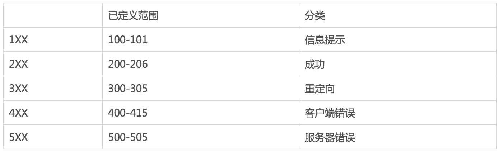

3 获取断言
当我们进行手动测试的时候，我们可以通过观察查看网页是否使我们想访问的站点，但是如何让电脑知道我们访问的网站是不是我们想要访问的站点呢？这里我们可以通过如下这些方法进行查看
1.http状态码
什么是http状态码？
- HTTP状态码（HTTP Status Code）是用以表示网页服务器HTTP响应状态的3位数字代码。
http状态码用来干什么？
- web服务器用来告诉客户端，发生了什么事。
http状态码的分类 
常见的状态码
- 200 OK 服务器成功处理了请求（这个是我们见到最多的）
- 301/302 Moved Permanently（重定向）请求的URL已移走。Response中应该包含一个Location URL, 说明资源现在所处的位置
- 304 Not Modified（未修改）客户的缓存资源是最新的， 要客户端使用缓存
- 404 Not Found 未找到资源
- 501 Internal Server Error服务器遇到一个错误，使其无法对请求提供服务
2.获取断言信息操作
- current_url 显示当前url，通过url验证
from selenium import webdriver driver = webdriver.Firefox() url = 'https://weibo.com/' driver.get(url) print (driver.current_url) - title 显示当前页面的标题，通过表条验证
driver.title - 保存快照
driver.get_screenshot_as_png('file.png') # 这种方式只能存成png图片driver.get_screenshot_as_file('file2.jpg') # 这种方式可以存成其他形式
练习案例1
# 导包
from selenium import webdriver
# 创建浏览器对象
driver = webdriver.PhantomJS()
# 发起访问
url = 'http://www.baidu.com'
driver.get(url)
print('当前url:', driver.current_url)
driver.close()
练习案例2
# coding:utf-8
# 导包
from selenium import webdriver
import time
# 创建浏览器对象
driver = webdriver.Firefox()
url = 'http://www.baidu.com'
driver.get(url)
# 打印当前url
print('当前url:',driver.current_url)
# 打印当前的标题
print('当前标题:',driver.title)
# 获取截图，存在内存中
data = driver.get_screenshot_as_png()
# 保存截图
f = open('baidu.png', 'wb')
f.write(data)
f.close()
# 直接将截图保存文件
driver.get_screenshot_as_file('baidu2.jpg')
# 打印源码
page = driver.page_source.encode()
with open('baidu.html','wb')as f:
f.write(page)
print ('******')
# 关闭浏览器对象
time.sleep(5)
driver.close()